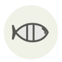

Maigre (ombrine)
Meagre
| Nom latin | Argyrosomus regius |
|---|---|
| Famille | Poissons & fruits de mer |
| Origine | Estuaire de la Gironde et côte atlantique |
| Saison | mai – juillet |
| Goût | Doux · Charnu · Iodé |
| Prix courant | 12–22 €/kg |
Ce que c’est
Les sciénidés tambourinent : les mâles font vibrer des muscles contre la vessie natatoire, et un maigre en fraie dans la Gironde s’entend d’une barque à trente mètres. Les pêcheurs repéraient autrefois les bancs à l’oreille, penchés par-dessus bord.
En cuisine
Peu gras, il sèche vite. Taillez des tronçons de 3 cm sur l’arête, salez-les une heure à l’avance et rôtissez à 140 °C jusqu’à ce que la brochette n’accroche plus : traitez-le comme du veau, pas comme un bar.
S’accorde avec
Huile d’olive Citron Fenouil sauvage Salicorne Échalote Vinaigre de vin blanc Beurre Thym
De saison en même temps
Alose Espadon Agneau de pré-salé Germon (thon blanc) Awabi (ormeau du Japon) Bonite à ventre rayé
Une erreur ici, ou un oubli ? Dites-le nous